It included present-day Bengal, Bihar and Odisha. Compared with other provinces, Bengal was the central point of national awakening.
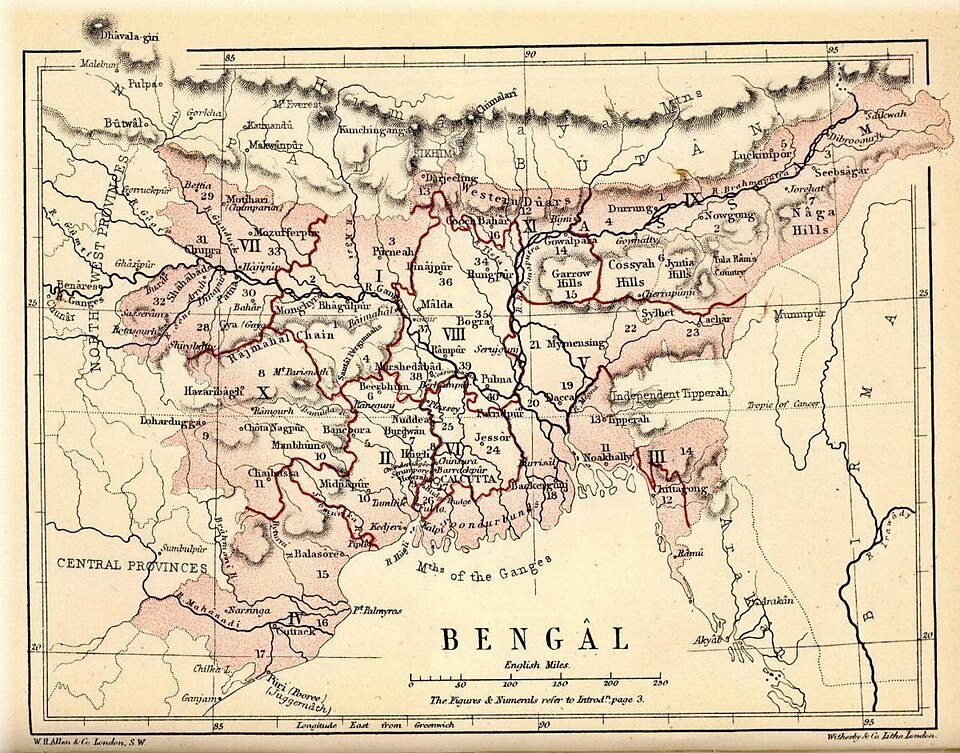
The Bengal Presidency on a map of 1880
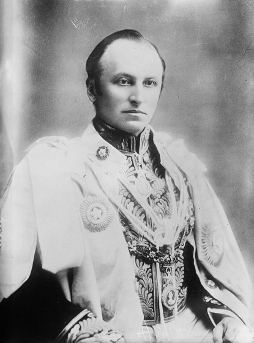
Viceroy Curzon (1899–1905)
The impetus and thought for the national movement came from Bengal. Curzon decided to divide the vast Bengal Province.
16 October 1905
East Bengal and West Bengal
Bengal was officially divided into two provinces.
Two reasons
Official reason: “administrative efficiency”.
Real reason (textbook): divide and rule, to break the united national feeling and set communities against each other.
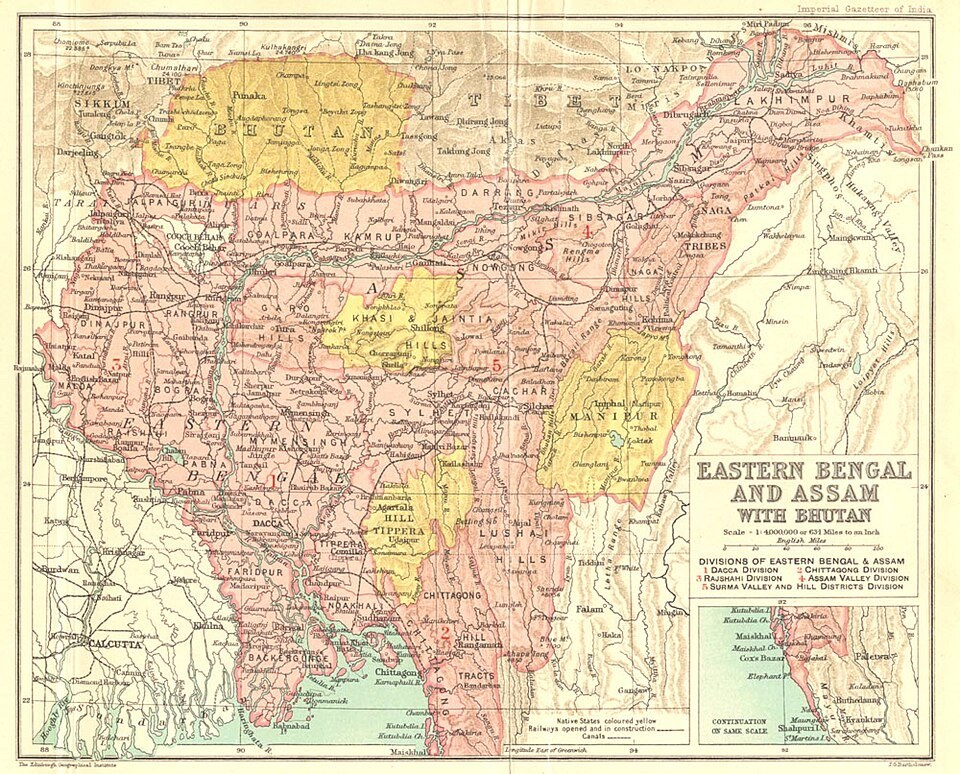
The new province "Eastern Bengal and Assam" (map, 1907–09)
INDIA → BENGAL → PARTITION
Act 02 · The day Bengal mourned
16·101905
KOLKATAThe Day Bengal Mourned16 OCT 1905
A whole province observes ‘National Mourning Day’
On the day of the partition, all of Bengal mourns the division of its land.
Boycott foreign goods. Use our own.
The same day, a call is announced: boycott all foreign goods and use indigenous (Indian-made) goods.
Hindus and Muslims tie rakhis to each other
Across Bengal, people tie rakhis to show their unity. Indians outside Bengal feel the partition was meant to crush national feeling.
RECONSTRUCTION · a classroom newspaper page built from the textbook account, not an original 1905 newspaper
Act 02 · The Boycott and Swadeshi Movement
Three things every patriot was asked to do
Swadeshi
"Of one's own country": adopt Indian-made products
→ Indian industries grow
Boycott
Refuse to buy or use foreign (British) goods
→ British industry loses money
National education
Schools run by Indians, teaching Indian values
→ minds free from foreign control
Boycott hurts the ruler's pocket. Swadeshi builds our own strength. Why use both together?
Act 02 · From Bengal to all of India
1911CANCELLED
What did the boycott achieve?
BRITAINCloth from Manchester stopped. Imports of sugar, shoes, cigarettes and tobacco fell.
INDIASales of Indian cloth rose. New factories made indigenous goods.
SPREADFelt in Punjab, U.P., M.P., Mumbai, Madras and Gujarat too
LONDONIts echo reached the British Parliament
1911 STOP PARTITION OF BENGAL CANCELLED STOP
A victory of relentless, united effort against English rule.
Act 03 · The British answer: divide them
1906LEAGUE
How the textbook explains it
The national fight grows stronger
▼
Viceroy Minto and Secretary of State Morley plan to crush Indian nationalism
▼
The British favour upper-class Muslims and encourage a demand for separate voting rights
▼
1906 · The Muslim League is formed
Who played a role?
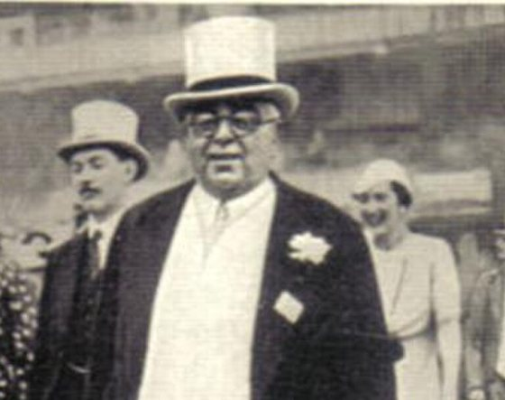
Aga Khan
religious head of the Muslims
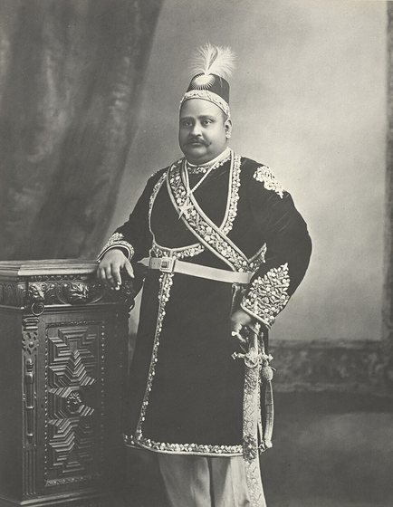
Salimullah Khan
Nawab of Dhaka
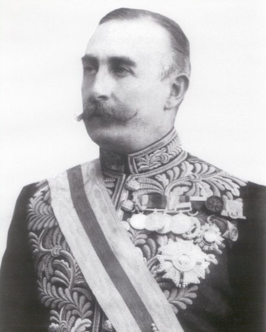
Lord Minto
Viceroy
DS
Dunlop Smith
Minto's secretary
The League's annual meeting was held on the same day as the Congress session, to keep Muslims away from the Congress.
Act 03 · Divide and rule becomes law
1909REFORMS
The Morley-Minto Reforms
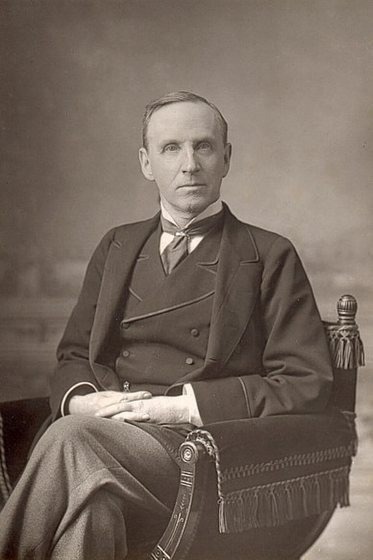
Morley
Minto
Under the leadership of the Aga Khan, a Muslim delegation met Viceroy Minto. Morley was the Secretary of State. The reforms of 1909 are named after them.
Separate electorate
Voters of one community vote only for candidates of their own community
→ people start voting as groups, not as one nation
“The real creator of Pakistan was not Mohammad Ali Jinnah or Rahmat Ali, but Lord Minto.”
A HISTORIAN · QUOTED IN THE TEXTBOOK (WORDING CORRECTED)
That is why, says the textbook, many writers call Minto the father of Muslim communalism: the demand for separate representation was “the brain child … of the English policy”.
Why does voting in separate groups make it harder for people to feel like one nation?
Act 04 · Why did some young Indians choose revolution?
1907SURAT
BACKGROUND 1The Partition of Bengal and the struggle to undo it
→
BACKGROUND 2Congress splits into two groups at Surat (1907)
→
BACKGROUND 3Anger at the Congress practice of “only resolutions and requests”
‘Maval’
the moderates
Petitions, resolutions, requests
Slow change, step by step
vs
‘Jahal’
the radicals
Brought new life to young activists
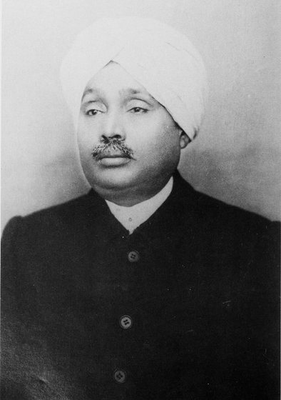
Lala Lajpat Rai
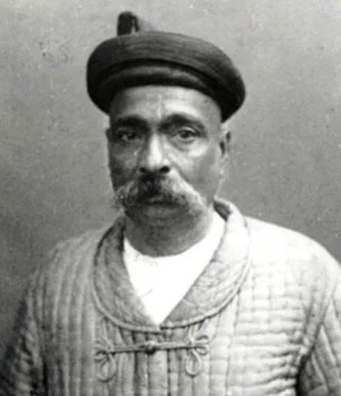
Bal Gangadhar Tilak
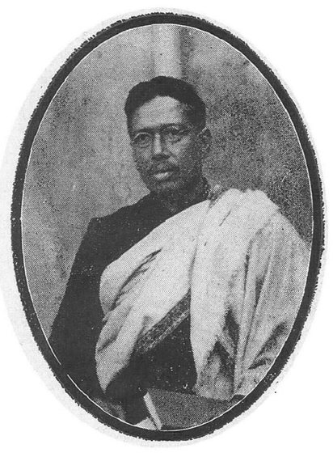
Bipin Chandra Pal
Act 04 · A slogan that became a maxim
Bal Gangadhar Tilak · photograph
Lokmanya Tilak
“‘Freedom’ is my birthright and I will achieve it anyhow.”
This became the maxim (guiding motto) of the revolutionary freedom fighters.
A group of young Indians was ready to give up their lives, or take lives, to win freedom from foreign rule.
Act 04 · Secret societies and fiery newspapers
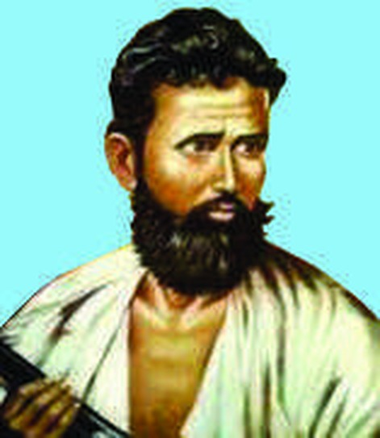
The pioneer
Vasudev Balvant Phadke
started revolutionary activity in India. Later: the Chaphekar brothers, Vir Savarkar, Barindranath Ghosh, Khudiram Bose, Praful Chaki…
Secret societies
MitramelaAbhinav BharatAnushilan SamitiAnjuman-e-Muhibban-e-VatanIndian Patriots Association (later ‘Bharatmata’)
Newspapers that gave strength
YugantarNavshaktiVandemataramKesariMaratha
Act 04 · Two stages
Stage 1 · up to the First World War
Newspapers, secret societies, bombs
AlipurAbout 34 revolutionaries prosecuted in the Alipur case
Howrah · DhakaSeveral arrested in the Howrah and Dhaka cases
DelhiA bomb thrown in an attempt to kill Lord Hardinge
13 Nov 1909Bomb thrown at Viceroy Minto outside Raipur Darwaja, Ahmedabad
Stage 2 · 1920–42
A new generation
KakoriThe ‘Kakori Loot Case’
LahoreThe ‘Lahore case’
DelhiBomb dropped in the Central Legislative Assembly
Most revolutionaries were young: 18 to 24 years old. They went to their deaths shouting ‘Inquilab Zindabad’ and ‘Vande Mataram’.
Act 04 · They carried the torch of nationalism
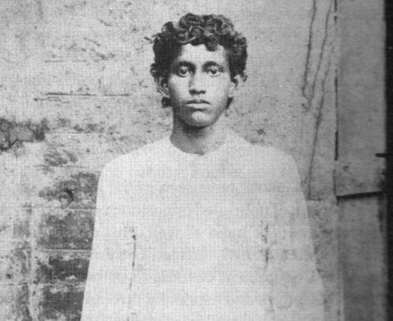
Khudiram Bose
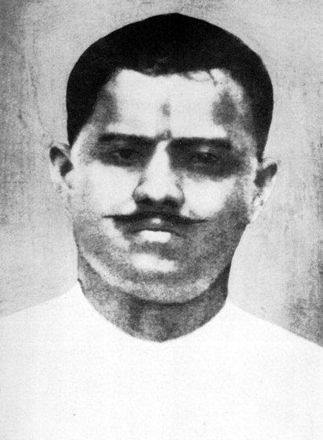
Ramprasad ‘Bismil’
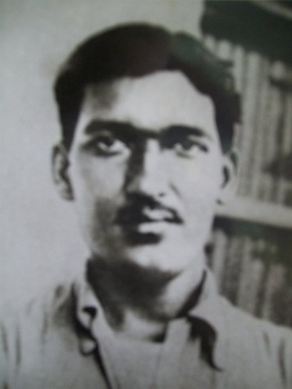
Ashfaqullah Khan
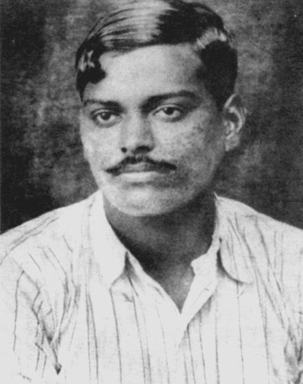
Chandrashekhar ‘Azad’
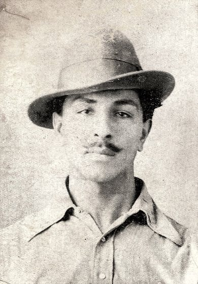
Bhagat Singh
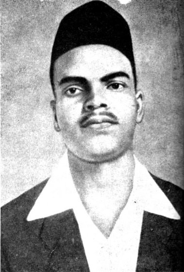
Shivram Rajguru
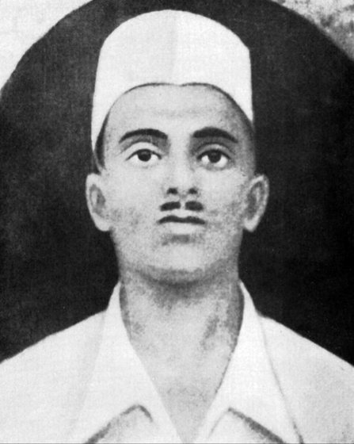
Sukhdev Thapar
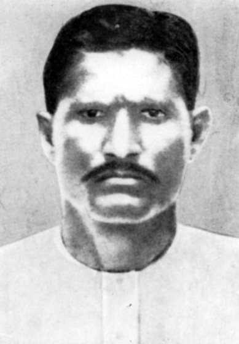
Roshan Singh
Also named in the textbook: Praful Chaki, Batukeshwar Dutt, the Chaphekar brothers, Vir Savarkar, Barindranath Ghosh.
“Their sacrifices would inspire the young generation for ages.”
Historical photographs from Wikimedia Commons (the textbook shows painted portraits of the same people, pp. 24–25)
Act 05 · Hyperframe: fierce revolution in Gujarat
1902GUJARAT
INDIA → GujaratIndia → GUJARAT · VadodaraIndia → GUJARAT · the networkIndia → GUJARAT · AhmedabadIndia → GUJARAT · the result
Our own state
Gujarat joins the revolution
Revolutionary activity was not only in Bengal and Maharashtra. Let us zoom into Gujarat.
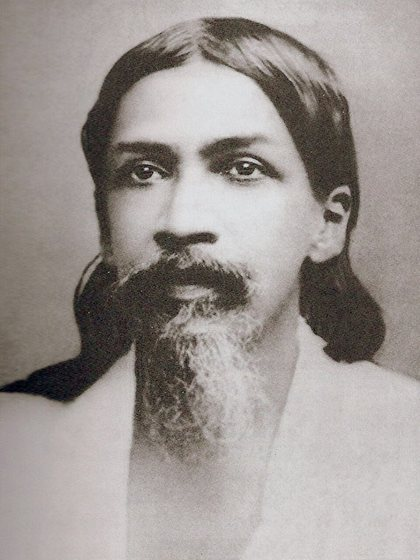
Sri Aurobindo
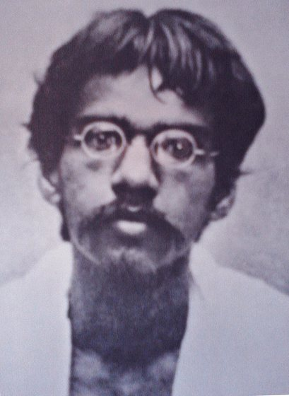
Barindra Kumar Ghosh
The pioneer, behind the curtain
Sri Aurobindo Ghosh was the pioneer of armed revolution in Gujarat, but stayed in the background.
His brother Barindrakumar Ghosh led from the front (1902). He travelled to south Gujarat and met able companions Chhotubhai and Ambubhai Purani.
Building a network
On the banks of the Narmada he met Sakaria Swami, linked with the Queen of Jhansi in 1857
Middle-class youth joined from Vadodara, Charotar (Kheda), Ahmedabad, Mehsana
Gangnath Vidyalay near Chandod–Karnali: a centre of secret activity
13 November 1909 · Raipur Darwaja
A bomb was thrown at the carriage (buggy) of Viceroy Minto outside Raipur Darwaja in Ahmedabad.
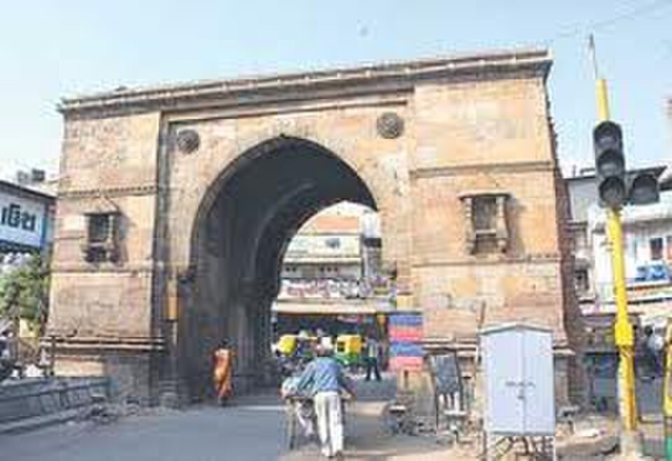
Raipur Darwaja, Ahmedabad, today
The result
Many Gujarati youths were punished severely. But the fight did not stop.
Finally the government realised that suppression alone would not help it rule India.
Nahavana Sabu Banavvani Reet“How to make bathing soap”
Kasrat“Exercise”
Gulab no Kisso“The story of the rose”
Kayada no Sangrah“A collection of laws”
InsideMethods of preparing bombs, so that “Britishers won't understand!”
BOOK · SRI AUROBINDO
Bhavani Mandir
described the scheme for revolution. Translated into Gujarati and published in the journal ‘Dakshina’.
Why did the revolutionaries need to hide their ideas behind harmless titles?
Act 06 · The fight for India, far from India
Europe
England, France, Germany, Russia
North America
Canada and America
Asia
Afghanistan, Myanmar (Burma), Malaya, Singapore
Act 06 · Indians abroad fight for India
1907STUTTGART
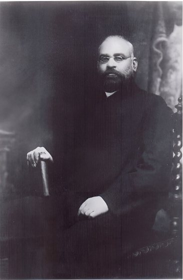
Shyamji Krishna Verma
A leader of Indian revolutionaries in England
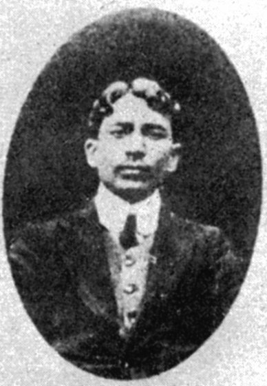
Madanlal Dhingra
Dhingra killed William Wylie, who used to criticise the revolutionaries
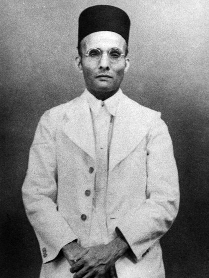
Vir Savarkar
Pistols were secretly sent to India from England, hidden in cooks' bedding
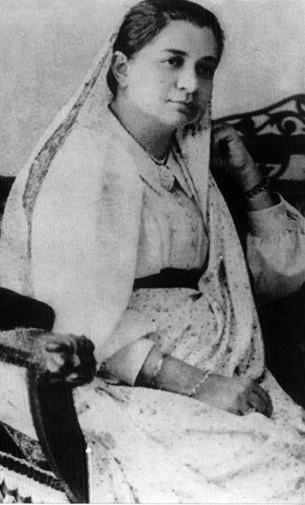
Madam Bhikhaiji Cama
Hoisted the national flag she prepared, for the first time, at the International Socialist Conference, Stuttgart, Germany (1907)
Her flag, redrawn: 8 lotuses, “Vande Mataram”, sun and moon
Act 06 · A newspaper called ‘Revolt’
GADARCALIFORNIA
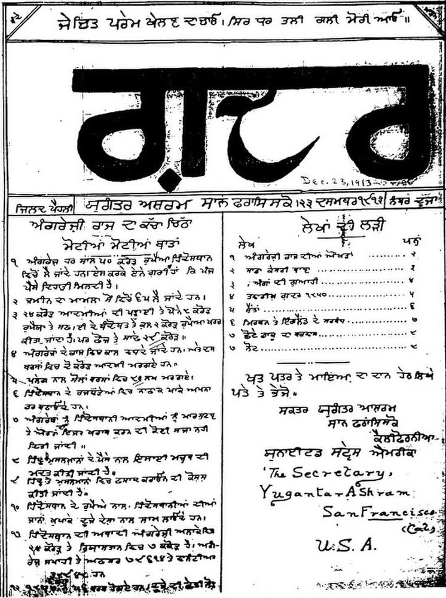
Front page of the Punjabi edition of ‘Ghadar’, 23 December 1913
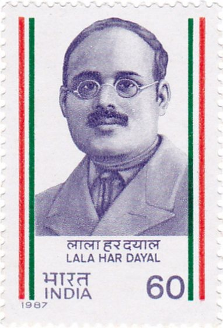
Lala Hardayal and the Gadar Party
AmericaThe ‘Indian Independence League’ in California was later named the ‘Gadar Party’ by Lala Hardayal
WeeklyThe paper ‘Gadar’ was published in four languages
JoinedTaraknath Das and Kartar Singh
GermanyChampak Raman Pillai formed the ‘Hind Rashtriya Swayamsevak Dal’. A plan was made to attack India with Iraq as headquarters
Why would a newspaper printed in Punjabi, Urdu and other Indian languages worry the British more than one in English?
Act 06 · A free Indian government, outside India
KABULPROVISIONAL
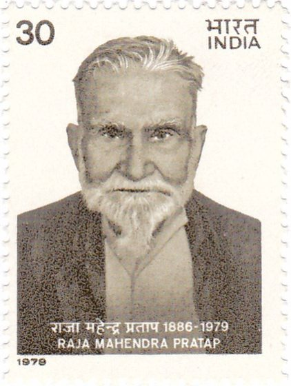
Raja Mahendra Pratap's Provisional Government
Formed in Afghanistan, with Raja Mahendra Pratap as ‘Rashtra Pramukh’ (head of the nation). Barkatullah, Abidulla, Maulana Bashir, Shamsher Singh and Dr. Mathursingh joined.
HelpSought support from Russia, Iran and Turkey; met the Turkish chief Anwar Pasha
CzarSent a golden strip signed by him, asking the Russian Czar to cut all ties with England
TrotskyThe Russian revolutionary pledged full support to Indian revolutionaries
THE ‘RESHMI RUMAL’ (SILK HANDKERCHIEF) CONSPIRACY
A secret message, the ‘Galibnama’, written on silk, called on Muslims to unite and fight the British.
EXPOSED
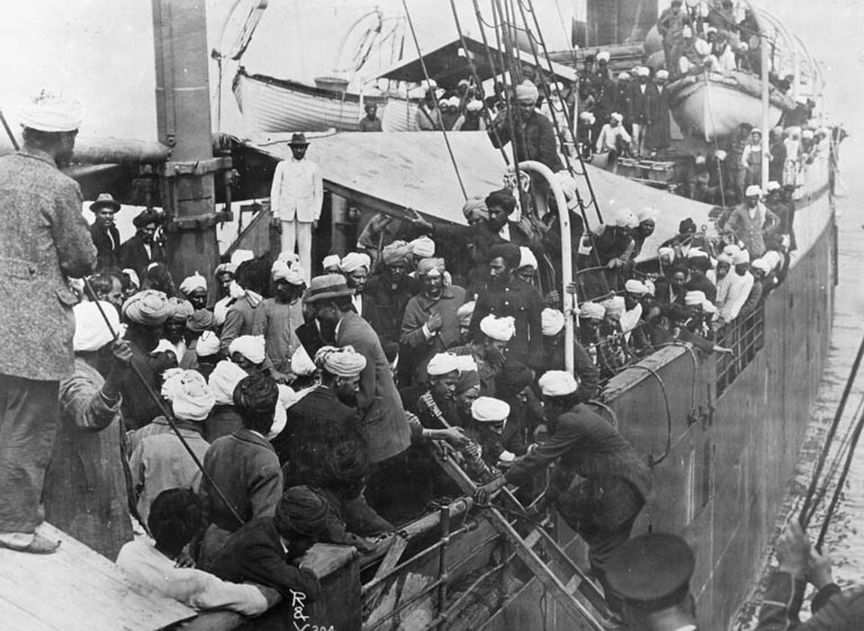
Passengers aboard the Komagata Maru, Vancouver, 1914
Sohanlal Pathak (Burma) and Parmanand (Singapore) carried on the work. The Komagata Maru and Toshamaru steamship events inspired Indians abroad to fight the British.
Act 07 · A new kind of leader
1915ARRIVES
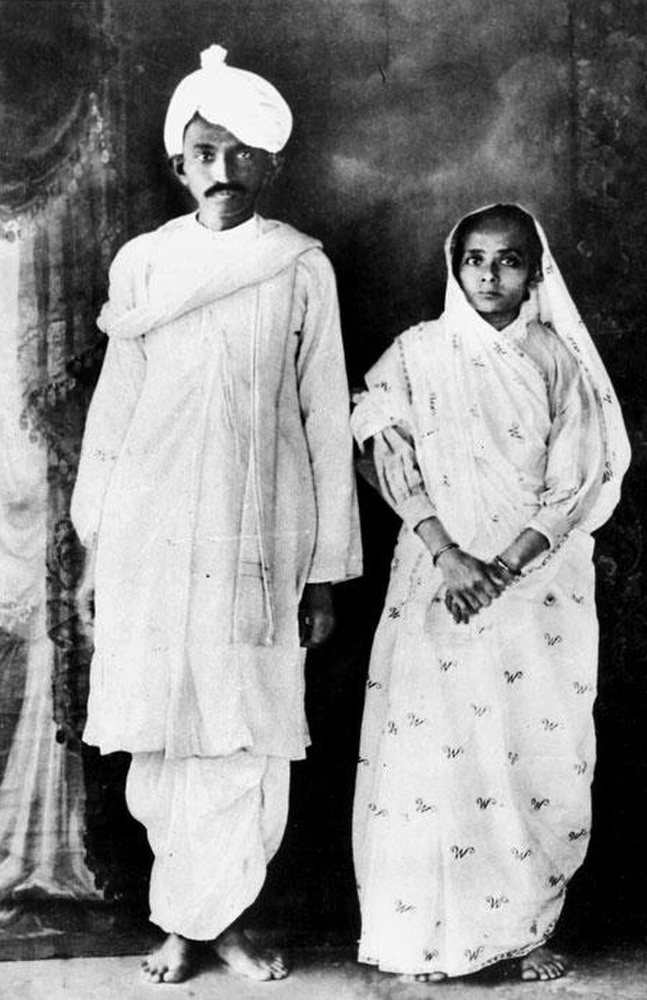
Gandhiji and Kasturba
on their return to India from South Africa, 1915
He came home with a new weapon
SOUTH AFRICASuccessfully fought racism with satyagraha
1915Returned to India
MENTORS
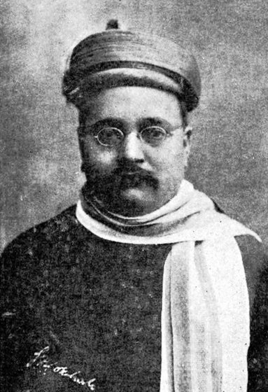
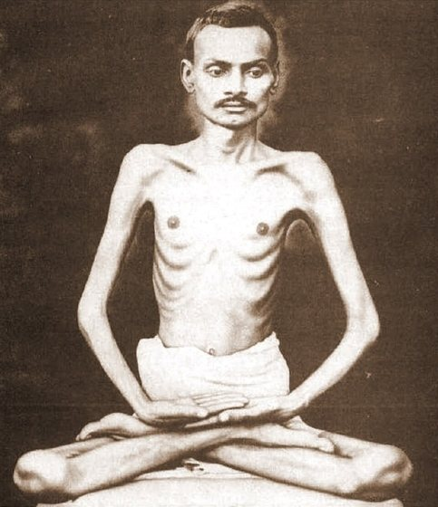
Political guru: Gopal Krishna Gokhale. Spiritual guide: Shrimad Rajchandra
TRAVELSTravelled across India and observed how Indians lived
His conclusion: exploitation was the root of India's poverty. He made plans to end British rule.
Satyagraha
“Insistence on truth”: resisting injustice without violence
→ the weapon of ordinary people
Act 07 · A law against freedom
1919ROWLATT
THE ROWLATT ACT · 1919
What it allowed
Any suspicious person could be arrested
…and jailed without any trial
It suppressed individual freedom and freedom of speech
BLACK ACT
Framed under the chairmanship of Rowlatt, to suppress revolutionaries and nationalists.
Gandhiji called it the ‘Black Act’.
Motilal Nehru:
it was the “snatching away of argument, appeal and advocacy” (no hearing, no appeal, no lawyer).
Meetings, rallies and strikes followed. Gandhiji was arrested on the way to Delhi. In Punjab, Dr. Satyapal and Dr. Kitchlu were arrested, and the agitation grew severe.
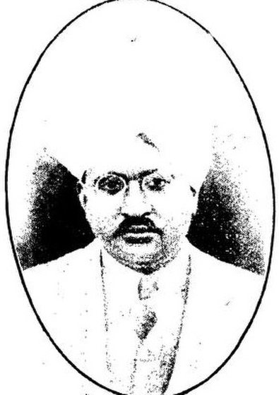
Dr. Satyapal
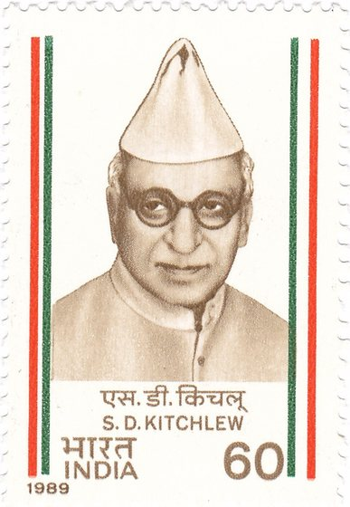
Dr. Kitchlew
Act 07 · Amritsar, Baisakhi day
1919AMRITSAR
Jallianwala Bagh
On Baisakhi, a public meeting was held to oppose the arrest of Dr. Satyapal and Dr. Kitchlu.
General Dyer arrived with troops and, without any warning, opened fire with machine guns.
379died (government report)
1,200injured (government report)
1,000died (Congress committee)
Textbook prints “13th March 1919”, a misprint. Baisakhi fell on 13 April 1919.